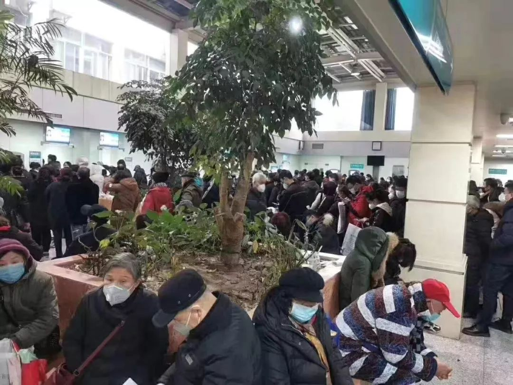
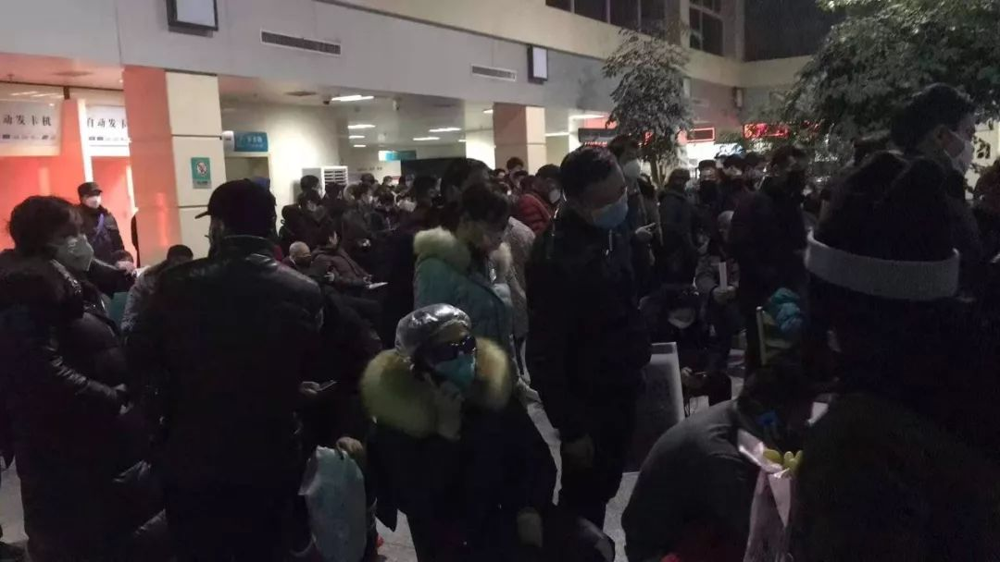

武汉启动“分级诊疗”后：社区医院物资短缺,有的护士防护服打上了补丁
原文链接 备份链接 ************************** *************▲************* 一家定点医院输液室里，坐满了输液的病人。（李福荣/图） 全文共*2678*字，阅读大约需要7分钟。 “住院 …

“1月31日，最新通知下来了，由于医院各科室医护人员减员情况严重，医院决定每个科室留5名医生倒班，每班6小时。这样的值班时长对于已经连续奋战了10天的医护人员来说危险系数很高。但医护人员现在不允许请假，除非被感染。”

文 |《财经》记者 刘以秦
编辑 | 谢丽容
截止1月31日12点，中国新型冠状病毒感染肺炎确诊病例9723人，疑似病例15238人，死亡人数213人，治愈人数178人。武汉是此次疫情爆发的源头区域，也是目前病患数量最多的城市。
严峻疫情背后，最令人关注的就是医院。1月22日，为应对发热病人因无序就医带来交叉感染和疾病传播问题，武汉市确定“7+7”模式，即在城区7家大型医院附近，选择7家二级公立医院作为发热门诊定点医院，专门收治发热病人。
7家大医院分别为：同济医院、协和医院、武大人民医院、武大中南医院、市一医院、市中心医院、市三医院。7家二级公立医院为：市汉口医院、市红十字会医院、市七医院、市四医院西软区、市九医院、市武昌医院、市五医院。
为了让病患就近就医，这些医院大多分散在各个不同区域，其中多家医院并非专业的传染病医院，1月22日当天，武汉市政府下达应急任务安排，对这些医院进行改造，搭设应急隔离隔断。
1月30日，上述“7+7”中的一家三甲公立医院一线医生接受了《财经》记者采访。自疫情扩散后，从1月21日开始，他已经连续10天没有离开医院，目前病房爆满，医护人员超负荷运转，已经出现医护人员交叉感染。近日随着各地医院支援队伍的加入，他们开始逐步缓解压力。
以下是这位医生的口述，或有利于外界更多了解武汉抗击疫情最前线的各种艰难。应这位医生的要求，我们将医院名称和医生姓名隐去，只如实记录他的叙述：
“10天，约30名医护人员，7人感染”
我们科室一共有10名医生，大约20名左右的护士（护士是流动作业的，具体人数并不固定），截至1月29日，仅我们科室共出现疑似感染医护人员7人。如果把范围扩大到全医院的话，截止1月27日，也就是29日的前两天，疑似感染医护人员61名，都出现了发烧、肺部CT有问题的情况。
如果是在正常情况下，我们整个医院都要被隔离了，但现在是非常时期，医护人员太紧缺了。目前轻症的医护人员就自行在家隔离，有两位同事已经住院，其他未有症状的同事还在正常上班。
造成集中交叉感染的主要原因之一，是我们在疫情还未大规模流行之前，没能做好防护工作。
1月16日，我们收治了一名我们医院的老病人，因为状况加重来住院，当时他还没出现肺炎症状，我们给他做了相应治疗，病患的血液都溅到了护士身上，当时护士只穿了简易的防护服。1月18日，我们开始知道有疫情发生，这名病人出现咳嗽、发烧症状，立刻给他做了肺部CT，发现了问题。
事后复盘，我们怀疑当时这个病人传染了某个护士，我们医护人员平时就一起工作、吃饭，造成了交叉感染。前两天，这位病人去世了。
还有一个问题是我们没有足够的防护装备，很多时候我们都是在没有达到防护标准的情况下，就进了污染区。我们医院里所有的医护人员，戴的口罩都是不同品牌不同型号的。
昨天晚上我值晚班，进病房之前，我看到配发的口罩，觉得不合格，但是我没有时间犹豫。我们的值班周期是4小时轮班，因为口罩和防护服必须4小时换一次，我如果晚进去一分钟，里面的同事就增加一分风险，所以，我只能立刻戴上，进去。此时，我们是同事，更是战友。
从病房出来后，我看到微信群里有消息说，这个口罩只是普通的防尘口罩，是外面捐来的物资，不具备医疗防护功能。
在防护装备上，自从疫情扩散后，我们时时刻刻面临这样的问题，吃了上顿，没有下顿。
1月31日，最新通知下来了，由于医院各科室医护人员减员情况严重，医院决定每个科室留5名医生倒班，每班6小时。这样的值班时长对于已经连续奋战了10天的医护人员来说危险系数很高。但医护人员现在不允许请假，除非被感染，否则无法休息。
我理解医院的压力，但也不想拿自己的身体开玩笑。科室几个医生包括我在内，虽然没有症状，都出现晚上畏寒，食欲不振，生物钟紊乱的状况。我们也已经向院方领导反映防护服时效性的问题，被告知没有商量的余地。社会上有很多帖子提到武汉有不少病人高度疑似（新冠病毒感染）但无法就医的问题，从医护人员的角度来说，我们真的尽力了，直到今天。

过去一段时间，我们收到了大量来自社会各界的物资募捐，非常感谢社会各界的支援，对物资紧缺问题也有一定的缓解。但其中真正符合医院标准的物资数量并不多。我们在值班结束后都需要去搬运物资，很多物资运送车进不了武汉，或者进不来清洁区，都需要我们去接应。
现在我们接收物资之前，会提前讲清楚需要的型号，以免浪费社会资源，也担心热心人士买到假冒伪劣产品。还担心出现物资冒领问题，之前微信群里有一个图片写的是我们医院接收捐赠的联系电话，但是那个电话并不是我们的，我们怀疑出现了物资诈骗问题，具体情况还未调查清楚。
“各地医疗支援队赶来了，部分缓解了压力”
我第一天去发热门诊，是“7+7”刚刚落定的1月22日，我们接到通知时，政府已经对外公布了定点医院的名单，中间几乎没有准备的时间。当天，大量病人涌入，但我们还要转移已有的病人，以及做病房改造工作，所以并没有足够的病床空出来。
虽然开了这么多医院，但是患者数量太大，新开的几家医院，第一天就住满了。我们开了住院证之后，会留电话，如果有空床位会打电话，但还有很多病人在医院门口等待。
当天，病人排队时间超过6小时的比比皆是，很多病人情绪不好，大哭的，争吵骂人的，打砸的情况很多，这几天社区医院开始分流发热病人，各大医院也都开了发热门诊，情况有所缓解，但问题仍然存在。我们开了住院证之后，会留电话，如果有空床位会打电话。

虽然很多医院都开始接收病人，但病人数量实在太多，大量的病人拿到了住院单也无法住院，只能等待床位空出来。和每天新增病例数目相比，治愈的病例显得非常少，很多时候床位能空出来，是因为病人去世了。
我看门诊的时候，一位女性患者跟我说，她丈夫已经感染了，都不知道能不能熬过今晚，我看了她的肺部CT，告诉她80%的概率是新冠肺炎，而且已经很严重了，我给她开了住院单，但也只能告诉她目前没有床位，得登记排队，她当时就情绪崩溃了。这个病人后来去哪了，我也不知道。
我同学的父亲发烧已经一个多星期了，症状高度疑似，他们天天给我打电话问能不能住院，我也没有办法，他只能自己在家隔离、吃药。
目前我们医院开放了600张床位，已经全部住满，核定是开放800张床位，但还要进行清洁区、污染区、潜在污染区以及医生生活区的改造工作，所以目前只有600张。
我们现在对病患的治疗都只能是对症治疗，不舒服就吸氧，用传统抗病毒药物，目前确实没有特效治疗药物，病患情绪都很紧张。医护人员主要是疲惫，要连轴转，几乎没有休息时间，目前看起来形势仍然不乐观。
我是直到1月29日才得知具体的确诊流程，先要科室筛选，上报医院，医院再上报到区里。每个科室每天只有3-5名病患有检测机会，第一批1月29日报上去，至今没有确诊结果。也就是说，我们医院的600名病患，还处于“高度疑似”的阶段。
这几天陆陆续续各地的医疗支援队也已经赶到，对于外部援助团队统一都是第一天先安排住宿，休息，第二天直接上岗，去门诊或是病房支援。目前外地医疗队已经在医院工作了。这些医护人员的到来，确实能缓解医院的压力，他们都是呼吸科和重症科的专家，比我们更专业。
但是我们科室到现在还没有外地医护人员支援，主任一直在向医院申请支援，还没有结果，我们的预测是，其他科室的人员比我们更紧张，更危急。
医院改造工作还在持续进行，还未完全达到标准，后续会陆续再开放一些病房。我们院不是传染病医院，相关的医疗装备也不充足，但因为定点医院需要覆盖多个区域，让病人就近就医，我们医院是所在区域内最大的医院，所以被纳入定点医院。
目前雷神山和火神山医院都在建，很快可以开放，外部支援也越来越多，这给我们带来新的希望。我们现在都住在医院对面，医院给安排的，便于第一时间响应，饭食也是医院统一供给，还有不少是社会上的餐馆捐赠，另外家住得比较远的医护人员，还有爱心车队帮忙接送。
专家预计2周后疫情情况会有所缓解，总体会持续2-3个月，我相信是这样的，对抗疫情，我们都有信心。

本文由树木计划作者【财经杂志】创作，独家发布在今日头条，未经授权，不得转载
新型冠状病毒疫情系列报道

▷ 点击图片查看
责编 | 黄端 duanhuang@caijing.com.cn
本文为《财经》杂志原创文章，未经授权不得转载或建立镜像。如需转载，请在文末留言申请并获取授权。
原文链接 备份链接 ************************** *************▲************* 一家定点医院输液室里，坐满了输液的病人。（李福荣/图） 全文共*2678*字，阅读大约需要7分钟。 “住院 …
原文链接 备份链接 我们做好了奋战半年的打算 武汉大学中南医院重症医学科的护理人员。本刊记者/周群峰 摄 1月25日，大年初一，“封城”下的武汉，小雨绵绵，路上人车稀少。但武汉大学中南医院重症医学科（ICU）的医护人员们无暇过年，依旧忙着 …
原文链接 备份链接 陈德昌说，金银潭医院的重症病人情况比较严重。在他工作的病房里，29个病人有16个都上了呼吸机，同时面临物资短缺的难题。当他们作为上海医疗队进驻时，原有医护人员已连续工作近一个月了。这次出征，比想象中要艰苦。 57岁的陈 …
原文链接 备份链接 ********** *****那天夜里，从晚上七点，至次日上午八点，她连续接诊200余位输液留观的病人，装备只有一次性外科口罩、帽子、白大褂和手套。**********接诊区患者爆满，病房里床位紧张，设备缺少、防护不 …
原文链接 备份链接 武汉交通管制后，路面上都是120的车子不停地跑，极少有私家车及的士 （摄影：远征、高星） 武汉从没有如此空旷，市民们避居在家，只有医院人口密集。 疫情还在扩散。 根据湖北卫健委的数据，1月29日0时-24时，湖北省新增 …